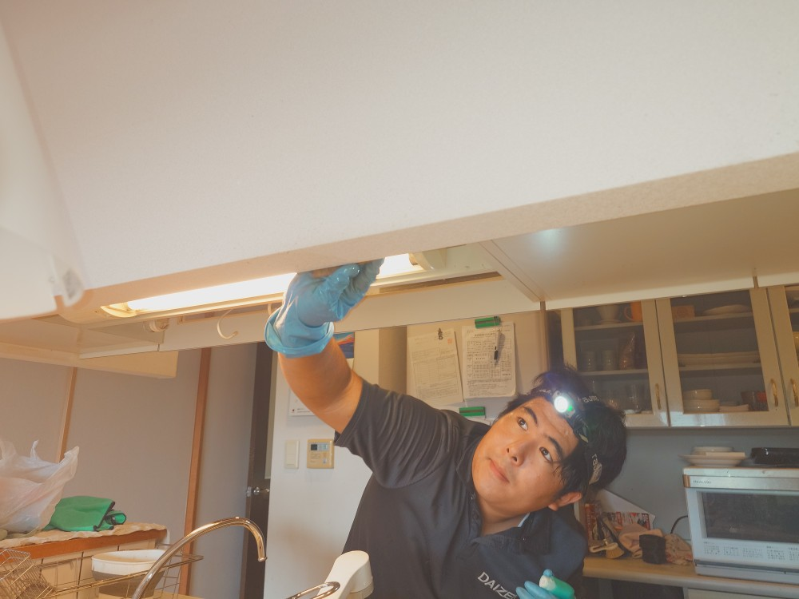
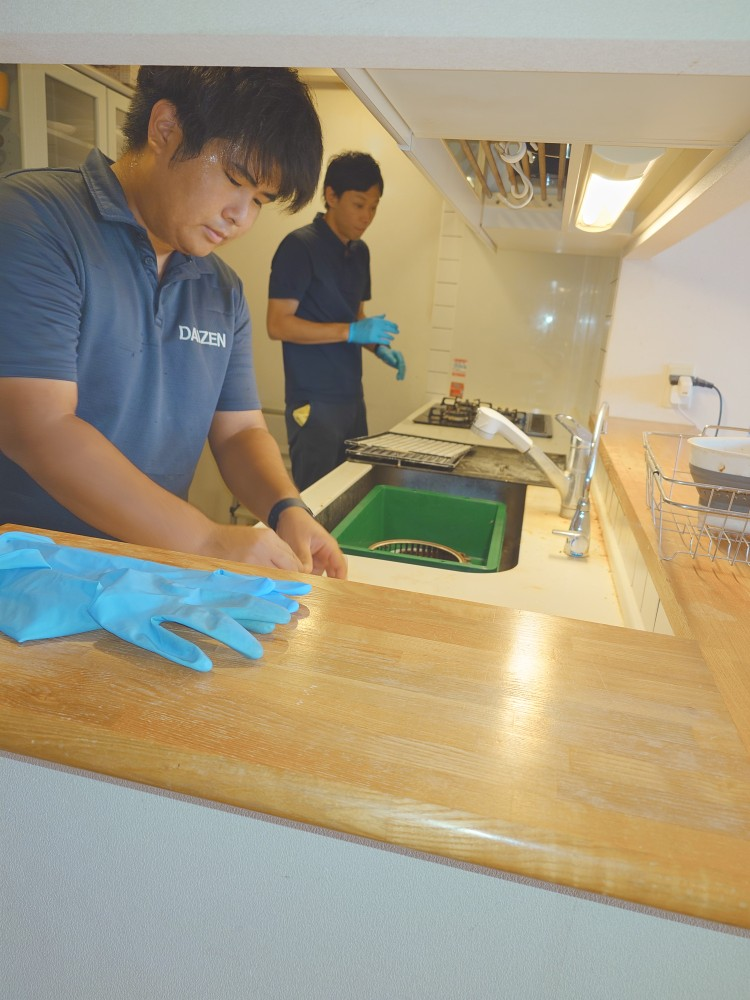
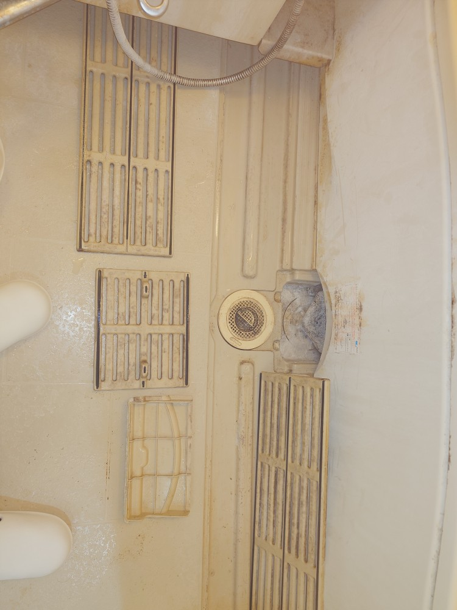
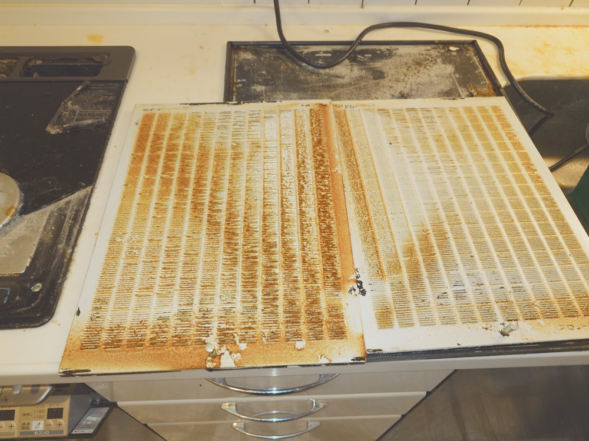
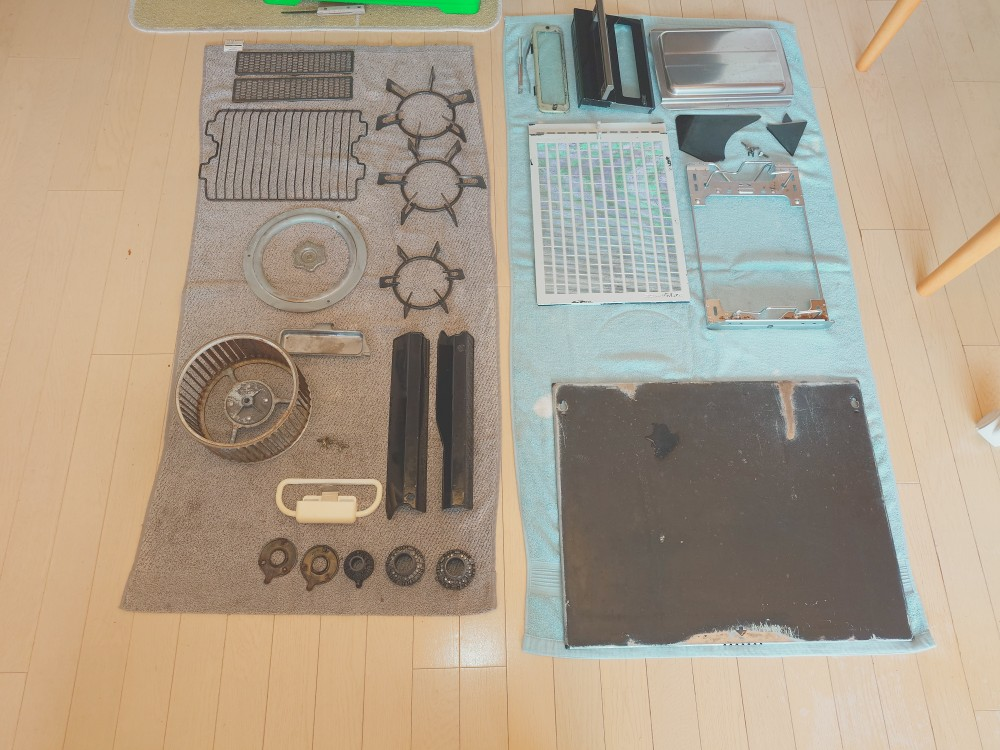
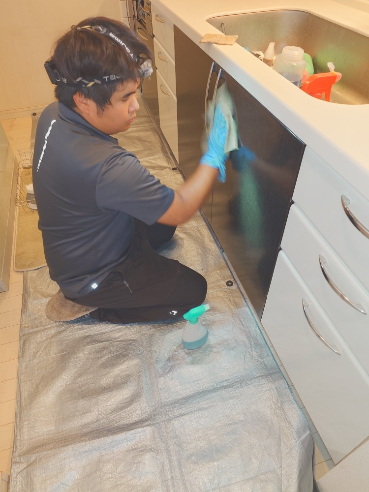
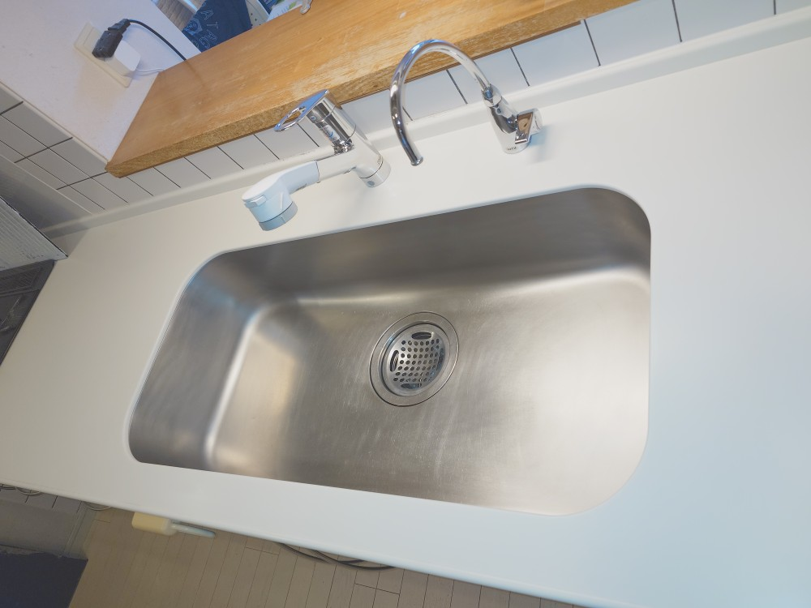
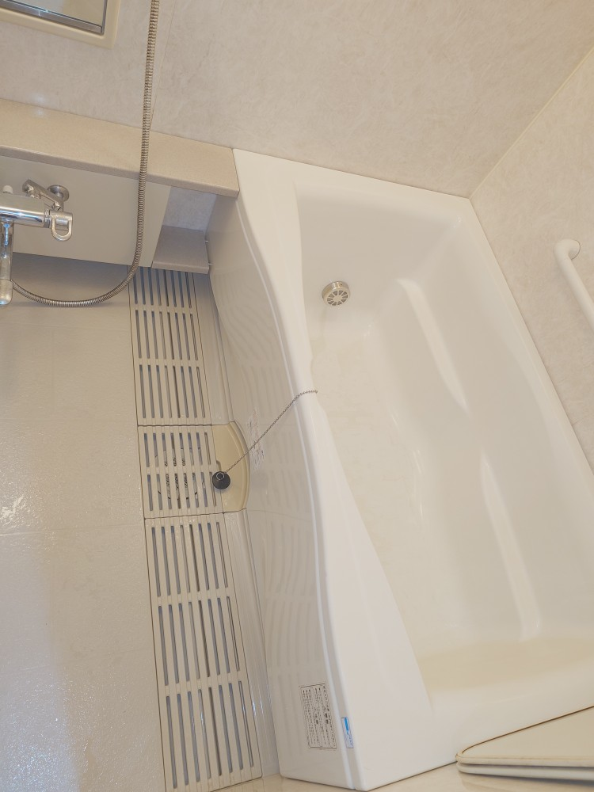
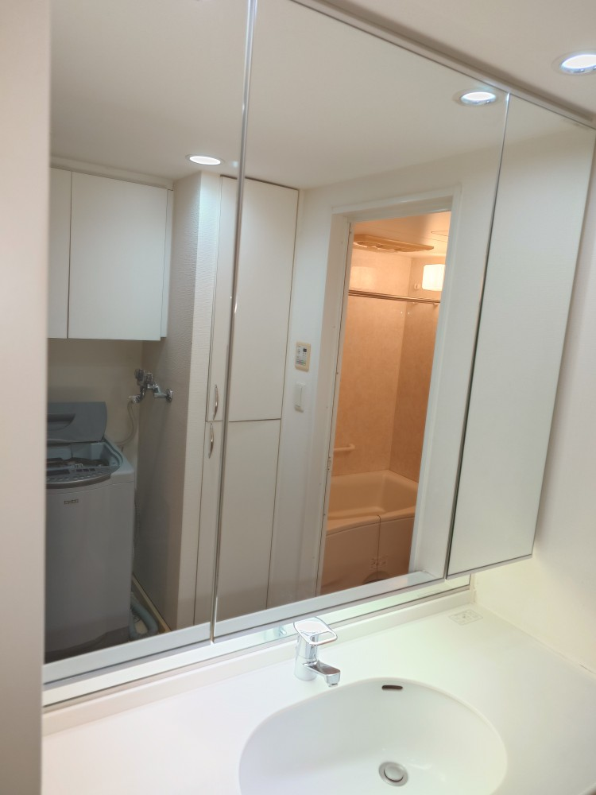

横浜市日野 リピーターさんS様マンションの水回りスペシャルクリーニングを実施しました!
横浜市日野のリピーターさんS様の3LDKマンションの水回りスペシャルクリーニングを実施しました!S様の水回りは、2年前にDAIZENメソッドを駆使して徹底的に綺麗にクリーニングさせて頂きました、それから2年を経て、浴室のカビ汚れ、石鹸カス汚れ、キッチン換気扇の油汚れなどが目立つ様になった事から、再度DAIZENスペシャル水回りクリーニングをご用命頂きました!2年前に各所、要所をDAIZENメソッドで分解洗浄クリーニング実施しておりますので、今回の再クリーニングはとても段取り良く、スムーズに運びました!みるみる綺麗な水回りが蘇りましたので、S様も大変満足なされました!








